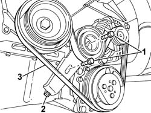

1092B40 AIR CONDITIONER COMPRESSOR/ALTERNATOR DRIVE BELT - R + R
- Path
- Procedures > 10 ENGINE UNIT > 1092 VARIOUS ENGINE COMPONENT CONTROLS > 1092B WATER PUMP AND ALTERNATOR DRIVE > 1092B40 AIR CONDITIONER COMPRESSOR/ALTERNATOR DRIVE BELT - R + R
- Kind
- repair procedure (removal / refitting; the operation number is the code)
- Applies to
- engines: 2.0 16V; all production periods
- Interactive page
- https://sloeber94.github.io/elrnDB-fDct/en/#/244000986
Applies to: engines: 2.0 16V; all production periods
 Removing
Removing
 Refitting
RefittingOp. 7055B54 UNDER-ENGINE GUARD - R R
Op. 1092C11 POWER STEERING PUMP DRIVE BELT - R R FOR VERSIONS WITH AIR CONDITIONER
1. Loosen the alternator belt tensioner retaining bolts.
2. Tighten the adjustment screw and loosen the belt tension.
3. Remove the belt.

Applies to: engines: 2.0 16V; all production periods
Refitting
Removing- Fit the belt.
- Tension the belt using the adjustment screw.
Op. 1092C11 POWER STEERING PUMP DRIVE BELT - R R FOR VERSIONS WITH AIR CONDITIONER
Topics linked from this page (2)
- 1092C11 POWER STEERING PUMP DRIVE BELT - R R FOR VERSIONS WITH AIR CONDITIONER
- 7055B54 UNDER-ENGINE GUARD - R R
Topics that link to this page (21)
- 1016C11 SINGLE CYLINDER HEAD-R R GASKET FOR VERSIONS WITH AIR CONDITIONER
- 1020A26 CRANKCASE SUMP - R R CLEAN MATING SURFACES AND APPLY SEALANT FOR VEHICLE WITH AIR CONDITIONER
- 1020D13 FRONT CRANKSHAFT OIL SEAL COVER- R+R AND REPLACE GASKETS FOR VERSIONS WITH AIR CONDITIONER
- 1020D20 FRONT CRANKSHAFT COVER OIL SEAL - REPLACE FOR VERSIONS WITH AIR CONDITIONER
- 1028H11 PISTON CONNECTING ROD SET - R R
- 1032B14 TOOTHED TIMING BELT - R + R FOR TIMING ADJUSTMENT OR REPLACEMENT VERSIONS WITH AIR CONDITIONER
- 1032B47 TOOTHED DRIVE PULLEY - R R FOR VERSIONS WITH AIR CONDITIONER
- 1032B53 DRIVEN TOOTHED PULLEY (ONE) - R R FOR VERSIONS WITH AIR CONDITIONER
- 1032C19 MOBILE TIMING BELT TENSIONER - R R FOR VERSIONS WITH AIR CONDITIONER
- 1032D12 TIMING SYSTEM PROTECTIVE COVER(S) - R + R
- 1036B10 OVERHEAD CAMSHAFT - R R ON VEHICLE
- 1036B36 FRONT CRANKSHAFT OIL SEAL-R R WITH TIMING BELT REMOVED
- 1084B10 ENGINE OIL PUMP - R + R WITH CRANKCASE SUMP REMOVED
- 1084B26 EMGINE OIL INTAKE DUCT - R R
- 1088C12 WATER PUMP - R+R FOR VERSIONS WITH AIR CONDITIONER
- 1092A12 CRANKSHAFT PULLEY - R+R FOR VERSIONS WITH AIR CONDITIONER
- 1092G20 ENGINE COMPONENT SINGLE BELT FIXED TENSIONER - ONE - R + R
- 5040A20 AIR CONDITIONER COMPRESSOR - R+R - INCLUDES FLUID LEVEL CHECK AND TOP UP IF NECESSARY
- 5530A10 ALTERNATOR - R+R
- 5530A14 ALTERNATOR - R+R FOR VERSIONS WITH AIR CONDITIONER
- 5530A40 ALTERNATOR BRACKETS/MOUNT/SPACER - R R